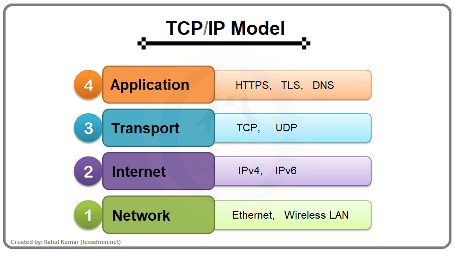

Networking Fundamentals
OSI Model:
The OSI Model is a 7-layer conceptual framework that explains how data moves from one device to another over a network.
It was standardized by the International Organization for Standardization (ISO) to help vendors and engineers design, build, and troubleshoot network systems in a consistent way.

OSI Layers (Layer 7 → Layer 1):
Layer 1 – Physical Layer:
Transfers raw bits (0s and 1s) over physical media.
Data Unit: Bits
Transmission Media
- Wired:
- Coaxial Cable
- Fiber Optic Cable
- Wireless:
- Wi-Fi (Radio Waves)
- Bluetooth
- Infrared
Physical layer transmits raw bits over physical media.
Layer 2 – Data Link Layer:
Handles framing, MAC addressing, and error detection.
Data Unit: Frames
Protocols / Standards:
- Ethernet
- ARP
- PPP
Devices:
- Switches
- Network Interface Card (NIC)
Data Link layer provides framing, MAC addressing, and error detection.
Layer 3 – Network Layer:
Handles logical addressing and routing between networks.
Data Unit: Packets
Protocols:
- IP (IPv4 / IPv6)
- ICMP
- Routing protocols (OSPF, RIP, BGP)
Devices:
- Routers
- Layer 3 switches
Network layer is responsible for logical addressing and routing.
Layer 4 – Transport Layer:
Provides end-to-end communication, flow control, segmentation, and error handling.
Data Unit: Segments
Protocols:
- TCP (Reliable, ordered, error-checked)
- UDP (Fast, unreliable)
Transport layer provides reliable or unreliable data delivery using TCP or UDP.
Layer 5 – Session Layer:
- Session setup & teardown
- Checkpointing
- Session recovery
Session layer establishes, manages, and terminates communication sessions.
Layer 6 – Presentation Layer:
- Data translation (ASCII ↔ Binary)
- Encryption / Decryption
- Compression
Protocols / Formats:
- SSL / TLS
- JPEG, PNG
- MP3, MP4
Presentation layer ensures data is properly formatted, encrypted, and compressed.
Layer 7 – Application Layer:
- HTTP / HTTPS
- FTP
- SMTP
- DNS
- SNMP
Example:
- Opening a website in a browser
- Sending an email
Application layer provides network services directly to end-user applications.
TCP/IP
The TCP/IP (Transmission Control Protocol / Internet Protocol) model is a practical and implementable communication model that defines how data is actually transmitted across networks, and it is the foundation of the Internet.
TCP/IP HAS 4 LAYERS :
- Application
- Transport
- Internet
- Network Access
1. Application Layer (TCP/IP) :
Provides services to user applications like web browsing, email, and file transfer.
Protocols:
- HTTP / HTTPS
- FTP
- SMTP
- POP3 / IMAP
- DNS
- SNMP
Application layer provides network services directly to end-user applications.
2. Transport Layer (TCP/IP):
Provides end-to-end communication, flow control, segmentation, and error handling.
Data Unit: Segment
Protocols:
- TCP – Reliable, ordered, error-checked
- UDP – Fast, connectionless, no guarantee
Transport layer ensures reliable or fast data delivery using TCP or UDP.
3. Internet Layer (TCP/IP):
Handles logical addressing and routing of packets.
Data Unit: Packet
Protocols:
- IP (IPv4 / IPv6)
- ICMP
- IPsec
Internet layer handles logical addressing and routing using IP.
4. Network Access Layer (TCP/IP) :
Defines how data is physically transmitted, including framing, MAC addressing, and signals.
Data Units: Frame → Bits
Technologies / Media:
- Ethernet
- ARP
- Wi-Fi
- Cables (UTP, Fiber)
- MAC Address
Network Access layer handles physical transmission and MAC addressing.
VPN
A VPN is a secure communication technology that creates an encrypted tunnel over a public network (like the Internet) to securely transmit data between users and networks.
A VPN is a secure tunnel on the Internet that keeps your data private and hidden.
What VPN Does
- Encrypts data
- Hides IP address
- Secures communication over public networks
- Provides remote access
VPN Protocol Examples
- IPsec
- SSL / TLS
- L2TP
- OpenVPN
- WireGuard
A VPN securely encrypts data and provides private communication over public networks.
Firewall
A Firewall is a network security device or software that monitors, filters, and controls incoming and outgoing network traffic based on predefined security rules.
Firewall can also show configuration details and system logs.
What Firewall Does:
- Allows trusted traffic
- Blocks malicious traffic
- Enforces security policies
- Protects internal network
How Firewall Works:
Traffic → Firewall Rules → Allow / Block
Firewalls are used by both network and security teams:
Network Team:- Troubleshoots connectivity and network issues
- Checks allowed/blocked traffic
- They Will trouble shoot the issues within the internet.
- Monitors traffic for threats and attacks
- Analyzes logs, alerts, and incidents.
- We can monitor the traffic across the organization network.
TYPES OF FIREWALLS:
Host-Based Firewall- Installed on individual devices (like laptops, servers, desktops).
- Controls incoming & outgoing packets for that single host.
- Useful for protecting devices inside the network (where a network firewall can’t see everything).
- Example: Windows Defender Firewall.
- Installed at the network boundary (router, dedicated firewall device).
- Filters all traffic entering or leaving the entire network.
- Protects multiple devices inside the internal network.
- Example: Cisco ASA, Palo Alto Networks firewall.
Simple Formula:
- Host-based firewall = Guard standing at each house’s door.
- Network-based firewall = Guard standing at the main gate of the whole colony.
Firewall Types
| Type | Meaning |
|---|---|
| Packet Filtering | Checks IP & port |
| Stateful Firewall | Tracks sessions |
| Proxy Firewall | Acts as middleman |
| Next-Gen Firewall (NGFW) | Deep inspection, IDS/IPS |
IDS & IPS
IDS monitors network traffic and detects suspicious or malicious activity, then raises alerts.
Key Points:
- Works like a security camera.
- Only detects and alerts when it sees suspicious or malicious activity and also detects the vernurability and gives an alert.
- It does not block the attack — just reports it.
Example:
Multiple wrong login attempts → Alert sent to admin
Formula: IDS = Detects & Reports
IPS – Intrusion Prevention System:
IPS detects malicious activity and takes action to stop it.
Key Points:
- Works like a security guard.
- Not only detects but also takes action (blocks, drops, or stops the malicious traffic).
- Prevents the attack from reaching the system.
Example:
Multiple wrong logins → IP blocked automatically
Formula: IPS = Detects & Blocks
Types of Detection in IDS:
Signature-Based Detection:- They are already known activities OR known patterns within the internet.
- Compares traffic against a internet or database of known attack patterns (signatures).
- Good at detecting known threats, but cannot detect new/unknown attacks.
- Example: Detecting a virus because its signature is already in the database.
- They are not known or this patterns are not in the internet.
- Builds a baseline of normal behavior (traffic, user actions, etc.) and raises alerts when something unusual happens.
- Can detect new, unknown, or zero-day attacks.
- But may sometimes raise false alarms (false positives).
Ports & Protocols
A protocol is a set of rules and standards that defines how data is formatted, transmitted, received, and interpreted between network devices.
A protocol defines the rules for communication between network devices.
Internet Protocol (IP) Address:
An IP address is a unique numerical identifier assigned to a device on a network to enable communication.
An IP address uniquely identifies a device on a network.
Types of IP Addresses:
Private IP Address:- Used inside a local or private network.
- Not routable on the Internet.
- Not globally unique.
- Can be reused in different private networks.
Private IP Address Ranges:
| Class | Range |
|---|---|
| Class A | 10.0.0.0 – 10.255.255.255 |
| Class B | 172.16.0.0 – 172.31.255.255 |
| Class C | 192.168.0.0 – 192.168.255.255 |
Classful addressing exists historically, but CIDR is used today.
Check Your Private IP Address:
- Windows → ipconfig
- Linux / macOS → ifconfig or ip addr
- Used on the Internet.
- Globally unique.
- Assigned by an Internet Service Provider (ISP).
- Identifies your network to the outside world.
Check Your Public IP Address:
Search in browser: whatismyip.com or what is my IP
Common Internet Protocols:
| Protocol | Purpose |
|---|---|
| HTTP / HTTPS | Web communication |
| FTP / SFTP | File transfer |
| SMTP / IMAP / POP3 | Email communication |
| DNS | Converts domain names to IP addresses |
| TCP / UDP / IP | Core data delivery |
What is a Port?
A port is a logical numerical identifier used to identify a protocol or service running on a device.
Types of Port Numbers:
| Port Range | Name | Meaning |
|---|---|---|
| 0–1023 | Well-known ports | Standard services |
| 1024–49151 | Registered ports | Applications |
| 49152–65535 | Dynamic ports | Temporary use |
Most Important Ports & Protocols:
| Protocol | Port | Transport | Purpose |
|---|---|---|---|
| HTTP | 80 | TCP | Web traffic |
| HTTPS | 443 | TCP | Secure web |
| FTP | 21 | TCP | File transfer |
| SSH | 22 | TCP | Secure remote login |
| Telnet | 23 | TCP | Remote login (insecure) |
| SMTP | 25 | TCP | Send email |
| DNS | 53 | TCP/UDP | Name resolution |
| POP3 | 110 | TCP | Receive email |
| IMAP | 143 | TCP | Receive email |
| SNMP | 161 | UDP | Network monitoring |
| TFTP | 69 | UDP | Lightweight file transfer |